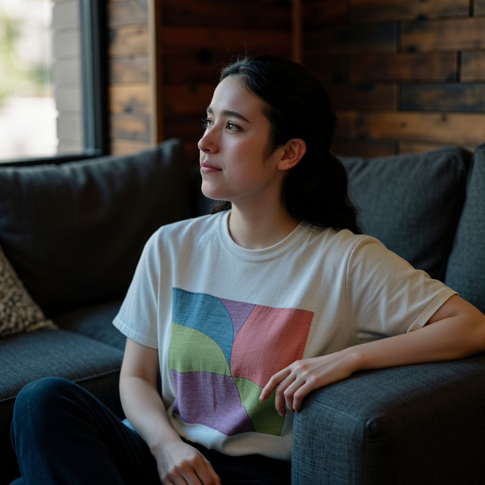

A Little Exploration of LoRAs
A few months ago, I experimented with training a LoRA for the FLUX.1 [dev] model, aiming to generate a consistent character across outputs.
Using a multimodal LLM, I iterated on prompts and generated a large number of images, ultimately selecting 14 relatively consistent ones to use as the LoRA training dataset.
These are the images I ended up using to train the LoRA:


I used the AI Toolkit framework for training. Since my local machine was not powerful enough for this task, I opted for RunPod, a company that provides GPU cloud computing services.
To generate images with Flux.1 Dev and my LoRA, I used ComfyUI, which is an open-source, node-based program that allows users to work with free diffusion models.
You can view a selection of the generated images below:





I removed random moles from the character’s face in some images using GIMP, an open-source image editing tool. Aside from this, no additional editing was performed.
I then created a second LoRA using these images as the dataset, believing I might achieve an even more consistent character. However, the output was a very strange-looking person, likely due to overfitting.